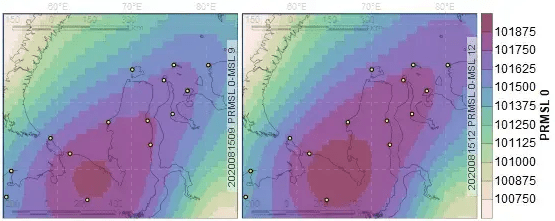
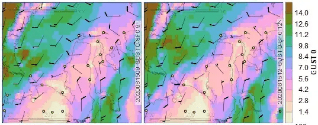
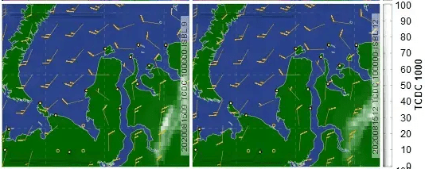
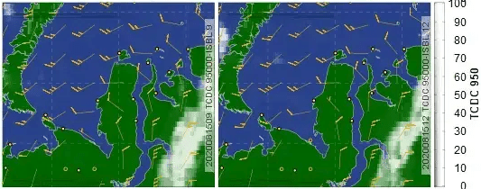
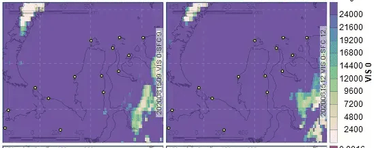
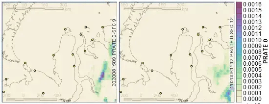
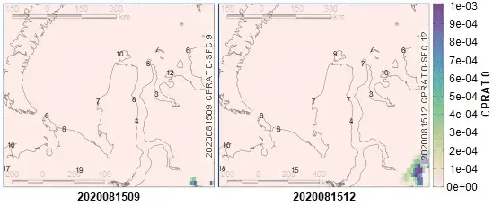

layout: true .banner[ .remarkonly[ .center[ <img src="assets/pbu-logo.jpg" width="156" /> <br> <img src="assets/sevin.jpg" width="71" /> <img src="assets/sevin-expedition.png" width="82" /> <br> <br> <br> ] ] .shorttitle[ ] ] --- class: metadata customtitle middle left name: H3216 <iframe width='220' height='220' class='timenow' src='https://www.timeanddate.com/worldclock/fullscreen.html?n=1440' frameborder='0' allow='encrypted-media' allowfullscreen></iframe> .sidebar.left-column[ # [Researches](#H4a95) # [Field work](#H6e42) # [Office work](#H201f) ] .mainbar.right-column[ .author[Nikita Platonov] .institute[A. N. Severtsov Institute of Ecology and Evolution of Russian Academy of Sciences] .title[Software and dataware integration to polar bear studies] .subtitle[Experiences of the Permanent Expedition of Russian Academy of Sciences] .what[VI<sup>th</sup> International Scientific and Practical Conference "Polar Bear Universe: Results of Researches 2012-2022, Plans for the Future", March 15-17, 2023] .where[Anadyr, Chukotka] .when[16 March 2023 .updated[Updated: 2023-03-16 04:50]] ] --- name: H4a95 .sidebar.left-column[ # [Researches](#H4a95).fg[].bg[] # [Field work](#H6e42) # [Office work](#H201f) ] .mainbar.right-column[ ### «The Program For Polar Bear Researches In The Russian Arctic» Performed by the Permanent Expedition of Russian Academy of Sciences Comprehensive polar bear study: .font90[ + Estimating spatial-temporal distribution of polar bears + Evaluating polar bear movement patterns and habitat use parameters in the different temporal resolutions using satellite biotelemetry + Studying polar bear reproductive biology + Investigating feeding, provision by food resources, the dynamics of primary preys of polar bear + Detection natural and human-induced factors, which influence to polar bear reproduction and survival + Genetic identification of polar bears + Studying of intra-annual and inter-annual variability of sea ice and other habitat parameters ] ] ??? Цель: комплексное изучение белого медведя как вида + Изучение пространственно-временного размещения животных в зависимости от факторов окружающей среды. + Оценка перемещений белого медведя и характера использования им местообитаний. + Изучение репродуктивной биологии белого медведя. + Изучение половозрастной структуры и демографических показателей популяций. + Изучение питания, кормовых ресурсов, распределения и динамики основных видов жертв белого медведя. + Изучение взаимоотношений белого медведя с другими видами животных и человеком. + Изучение роли природных и антропогенных факторов в динамике численности с особым вниманием к последствиям воздействия на популяции загрязняющих веществ, патогенных организмов и изменения климата. + Уточнение популяционной структуры географических популяций белого медведя с применением молекулярно-генетического и других современных методов анализа. + Изучение сезонной и межгодовой динамики ледовых местообитаний --- name: H6e42 .sidebar.left-column[ # [Researches](#H4a95) # [Field work](#H6e42).fg[].bg[] ## [Ice conditions](#H14ea) ## [Weather forecast](#Hd14f) # [Office work](#H201f) ] .mainbar.right-column[ .font93[ Issues: + Data traffic is limited by volume and speed, with interrupted sessions + Data are required to be near real-time. Solutions: + Tasks by schedule or requests on server, located with favorable traffic conditions. Output is text summary or lightweight figures. + Scripts for automatic data download during low traffic periods of sleeping or outdoor activity. + API usage instead of interactive and multi-step browser requests. + Argos satellite biotelemetry data – SOAP requests, with additional profit in uniform date format. + Web map services (WMS) and tile map services (TMS) – data volume is defined by screen resolution + Emergency assistance – voice or messages via Iridium satellite phones ] ] ??? Проблема: + Ограничения объема и скорости передачи данных, нередки обрывы + Необходимость получения данных в реальном времени Применяемые решения: + Получение и обработке данных «хостом» (сервер или человек), на выходе сводка и легковесные картинки. + Скрипты для автоматического получения данных ночью или во время «выезда в поле» + Использование API вместо интерактивных запросов в браузере + Спутниковая биотелеметрия Argos (SOAP) – стандартизация разделителей и формата данных + Картографические интернет сервисы TMS и WMS – разрешение данных по размеру экрана + «Помощь друга» – голосовая спутниковая связь --- name: H14ea .sidebar.left-column[ # [Researches](#H4a95) # [Field work](#H6e42).fg[] ## [Ice conditions](#H14ea) <span class="bullet bullet-active">[•](#H14ea)</span><span class="bullet mslide9m">[•](#Ha5c4)</span>.fg[].bg[] ## [Weather forecast](#Hd14f) # [Office work](#H201f) ] .mainbar.right-column[ Sentinel-1 active microwave data <div class="figure" style="text-align: center"> <img src="assets/S1B_EW_GRDM_1SDH_20210419T042651_20210419T042751_026531_032B0C_C096-ql.jpg" alt="Scene S1B_EW_GRDM_1SDH_20210419T042651_20210…<sup><a href=#fn>1</a></sup><span id=ref1></span> (~200 МB)" width="1330" height="568" /> <p class="caption">Scene S1B_EW_GRDM_1SDH_20210419T042651_20210…<sup><a href=#fn>1</a></sup><span id=ref1></span> (~200 МB)</p> </div> ] --- name: Ha5c4 .sidebar.left-column[ # [Researches](#H4a95) # [Field work](#H6e42).fg[] ## [Ice conditions](#H14ea) <span class="bullet bullet">[•](#H14ea)</span><span class="bullet bullet-active">[•](#Ha5c4)</span>.fg[].bg[] ## [Weather forecast](#Hd14f) # [Office work](#H201f) ] .mainbar.right-column[ Visual control for landfast ice continuity <div class="figure" style="text-align: center"> <img src="assets/hv-20210419-0426.png" alt="Required figure/image size is 100-200 KB" width="1330" height="568" /> <p class="caption centered">Required figure/image size is 100-200 KB</p> </div> ] --- name: Hd14f .sidebar.left-column[ # [Researches](#H4a95) # [Field work](#H6e42).fg[] ## [Ice conditions](#H14ea) ## [Weather forecast](#Hd14f) <span class="bullet bullet-active">[•](#Hd14f)</span><span class="bullet mslide13m">[•](#H508a)</span>.fg[].bg[] # [Office work](#H201f) ] .mainbar.right-column[ .dontscrollable[ Raw GFS atmosphere data in GRIB format: sea level pressure, cloud fraction and wind on geopotential height levels (aerial survey), horizontal visibility, precipitation rates, *etc*. <img src="assets/cloud-AeroVolga.png" width="1330" height="545" bound style="display: block; margin: auto;" /> ] ] ??? Данные GFS по атмосферной циркуляции: давление на уровне моря, фракция облачности и ветер по уровням геопотенциальных высот, горизонтальная видимость, осадки *и др.* --- name: H508a .sidebar.left-column[ # [Researches](#H4a95) # [Field work](#H6e42).fg[] ## [Ice conditions](#H14ea) ## [Weather forecast](#Hd14f) <span class="bullet bullet">[•](#Hd14f)</span><span class="bullet bullet-active">[•](#H508a)</span>.fg[].bg[] # [Office work](#H201f) ] .mainbar.right-column[ .remarkonly[ .panelset[ .panel[ .panel-name[SLP] <div class="figure" style="text-align: center">  <p class="caption centered">Sea level pressure</p> </div> ] .panel[ .panel-name[GUST] <div class="figure" style="text-align: center">  <p class="caption centered">Wind gusts at surface level</p> </div> ] .panel[ .panel-name[H1000] <div class="figure" style="text-align: center">  <p class="caption centered">Total cloud fraction and wind at level 1000 mbar</p> </div> ] .panel[ .panel-name[H950] <div class="figure" style="text-align: center">  <p class="caption centered">Total cloud fraction and wind at level 950 mbar</p> </div> ] .panel[ .panel-name[VIS] <div class="figure" style="text-align: center">  <p class="caption centered">Visibility at surface level</p> </div> ] .panel[ .panel-name[PR] <div class="figure" style="text-align: center">  <p class="caption centered">Precipitation rate at surface level</p> </div> ] .panel[ .panel-name[CPR] <div class="figure" style="text-align: center">  <p class="caption">Convective precipitation rate at surface level and air temperature at level 2m above ground</p> </div> ] ] ] ] --- name: H201f .sidebar.left-column[ # [Researches](#H4a95) # [Field work](#H6e42) # [Office work](#H201f).fg[].bg[] ## [Polar bear tracking](#H39f1) ## [Trajectory analysis](#H4821) ## [Environmental conditions](#He059) ] .mainbar.right-column[ ## Reproducible researces .font100[ Code (program): + converts raw data to processed data + does data analysis + implements literate programming + includes output (tables, figures, inline text) + gets results for a new data set Implementation: input <img alt="R" class="inline" src=https://cran.rstudio.com/Rlogo.svg> code, integrated to extended (Rmarkdown <img class="inline" src=https://github.com/rstudio/rmarkdown/raw/main/man/figures/logo.png>) markup language Markdown <img class="inline" src=https://seeklogo.com/images/M/markdown-logo-102FDA095E-seeklogo.com.png?v=637829616810000000>, is converted by <img alt="Pandoc" class="inline" src="assets/pandoc.png"> tool to formatted documents in various formats. Collaboration: web applications <img alt="Shiny" class="inline" src=https://shiny.rstudio.com/images/shiny-solo.svg> + Server avoids software (IDEs, GIS) installing + Client (GUI) avoids coding ] ] ??? Популяризация: веб-приложения Shiny + Программный код + преобразует необработанные данные в обработанные данные + выполняет анализ данных + включает результаты анализа в отчет + позволяет получить результат на новом наборе данных Реализация: язык программирования R, внедренный в язык текстовой разметки markdown (Rmarkdown), преобразуется утилитой Pandoc в документы различных форматов. + Не нужно устанавливать программное обеспечение (ГИС, IDE) + Графическая оболочка скрывает программирование --- name: H39f1 .sidebar.left-column[ # [Researches](#H4a95) # [Field work](#H6e42) # [Office work](#H201f).fg[] ## [Polar bear tracking](#H39f1) <span class="bullet bullet-active">[•](#H39f1)</span><span class="bullet mslide18m">[•](#Hc758)</span>.fg[].bg[] ## [Trajectory analysis](#H4821) ## [Environmental conditions](#He059) ] .mainbar.right-column[ <img src="assets/argos.png" width="1330" height="568" image style="display: block; margin: auto;" /> ] --- name: Hc758 .sidebar.left-column[ # [Researches](#H4a95) # [Field work](#H6e42) # [Office work](#H201f).fg[] ## [Polar bear tracking](#H39f1) <span class="bullet bullet">[•](#H39f1)</span><span class="bullet bullet-active">[•](#Hc758)</span>.fg[].bg[] ## [Trajectory analysis](#H4821) ## [Environmental conditions](#He059) ] .mainbar.right-column[ <iframe src="https://wwfrussia.shinyapps.io/argos?branch=somov" width="1330" height="650px" data-external="1" freeze></iframe> ] --- name: H4821 .sidebar.left-column[ # [Researches](#H4a95) # [Field work](#H6e42) # [Office work](#H201f).fg[] ## [Polar bear tracking](#H39f1) ## [Trajectory analysis](#H4821) <span class="bullet bullet-active">[•](#H4821)</span><span class="bullet mslide20m">[•](#He2ae)</span>.fg[].bg[] ## [Environmental conditions](#He059) ] .mainbar.right-column[ Movement analysis, home range <img src="assets/openday.png" width="1330" height="568" image style="display: block; margin: auto;" /> ] --- name: He2ae .sidebar.left-column[ # [Researches](#H4a95) # [Field work](#H6e42) # [Office work](#H201f).fg[] ## [Polar bear tracking](#H39f1) ## [Trajectory analysis](#H4821) <span class="bullet bullet">[•](#H4821)</span><span class="bullet bullet-active">[•](#He2ae)</span>.fg[].bg[] ## [Environmental conditions](#He059) ] .mainbar.right-column[ <iframe src="https://wwfrussia.shinyapps.io/openday/?showcase=0" width="1330" height="380px" data-external="1" magnify></iframe> ] --- name: He059 .sidebar.left-column[ # [Researches](#H4a95) # [Field work](#H6e42) # [Office work](#H201f).fg[] ## [Polar bear tracking](#H39f1) ## [Trajectory analysis](#H4821) ## [Environmental conditions](#He059) <span class="bullet bullet-active">[•](#He059)</span><span class="bullet mslide22m">[•](#H0ca0)</span>.fg[].bg[] ] .mainbar.right-column[ Sea ice, snow cover, vegetation growth using MODIS data <img src="assets/modis.png" width="1330" height="568" image style="display: block; margin: auto;" /> ] --- name: H0ca0 .sidebar.left-column[ # [Researches](#H4a95) # [Field work](#H6e42) # [Office work](#H201f).fg[] ## [Polar bear tracking](#H39f1) ## [Trajectory analysis](#H4821) ## [Environmental conditions](#He059) <span class="bullet bullet">[•](#He059)</span><span class="bullet bullet-active">[•](#H0ca0)</span>.fg[].bg[] ] .mainbar.right-column[ <iframe src="https://wwfrussia.shinyapps.io/modis?lon=180.5&lat=71.2&zoom=7&date=2022-09-08" width="1330" height="650px" data-external="1"></iframe> ] --- name: H7ba7 .sidebar.left-column[ # [Researches](#H4a95) # [Field work](#H6e42) # [Office work](#H201f) ] .mainbar.right-column[ .font78[ ## Acknowledgement + Permanent Expedition of Russian Academy of Sciences + «The Program For Polar Bear Researches In The Russian Arctic»: Viatcheslav Rozhnov (supervisor), Ilia Mordvintsev (expeditional leader), Eugeniy Ivanov, Sergey Naidenko, Nikita Platonov + Programs and projects for marine mammals studies + Collaboration, co-organization + National park «Russian Arctic» + National park «Lenskie Stolby», Institute of Biological Problems of the Cryoliptozone (Siberian branch of Russian Academy of Sciences) + Sergey Kavry, Anatoly Kochnev + Support + The Arctic Research Center LLC, the scientific institute of PJSC NK Rosneft + "Study of Rare Animal Species" project of the Russian Geographical Society + "Master of the Arctic-2021" project of the International Environmental Foundation "Clean Seas" + Chukotka Arctic Research Center + Alexey Yakovlev ] ] ??? ## Благодарности + Участники Постоянно действующей экспедиции РАН + «Программа изучения белого медведя в Российской Арктике»: Вячеслав Рожнов (руководитель), Илья Мордвинцев (зам.рук.), Евгений Иванов, Сергей Найденко + Программы «Белуха», «Тюлени закрытых водоемов» + Соучастники, соорганизаторы + НП «Русская Арктика» + НП «Ленские Столбы», ИБПК СО РАН + Российский центр освоения Арктики + Поддержка + НК «Чукотский арктический научный центр» + Русское географическое общество + ООО «Арктический Научный Центр» -- научный институт ПАО «НК «Роснефть» ] --- name: fn hide: true .sidebar.left-column[ # [Researches](#H4a95) # [Field work](#H6e42) # [Office work](#H201f) ] .mainbar.right-column[ .footnote.smallest[ **** 1. S1B_EW_GRDM_1SDH_20210419T042651_20210419T042751_026531_032B0C_C096 ] ]
countdown.knit
−
+
08
:
00